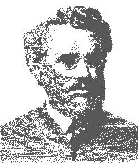

Ellet Joseph Waggoner:
The Myth and the Man
David P. McMahon
Waggoner in Decline: 1892-1897
One feature characterizes Waggoner's theological decline after he became editor of the British Present Truth in 1892. In almost every area his theology blurred essential distinctions.
All sound theology must have both union and distinction. In this respect theology must be like music. Without a distinction of notes, there is no music. And without a harmony of notes, there is no music. Let us consider some theological illustrations.
The Christian religion is Trinitarian. We must distinguish the persons of the Trinity. The Father sent the Son, the Son died on the cross, and the Spirit incorporates us into Christ's holy history. We must distinguish between the work of the Mediator-the High-Priestly intercession of blood-and the Holy Spirit's work in the heart. The first is substitutionary; the second is not. On the other hand, we must maintain the essential unity of the persons of the Godhead. Where One is present, God is present. Only in this way can we hold the transcendence of God and the immanence of God in proper tension.
The same principle is true in Christology. We must distinguish the divine and the human nature of Christ. We must be careful not to confound them. And we must confess their union in the one person of Christ.
Soteriology illustrates the same point. Justification must be distinguished from sanctification. There must be no fusion. But justification must also exist in inseparable union with sanctification. There must be no separation. A sound theology must have union without fusion, distinction without separation. This principle applies to every important area of Christian thought.
The Western mind has sometimes been tempted to lose the union while holding to the distinction. This has happened in anthropology, where the wholistic concept of man has been lost. Scholastic Protestantism stressed the distinction between the law and the gospel in such a way that it lost a true sense of their union. This emphasis on distinction without a corresponding emphasis on union tended toward Deism. Religion became abstract, dry and sterile.
Just as a loss of union leads to Deism, which stresses only the transcendence of God, so the loss of distinction leads to pantheism, which stresses only the immanence of God. Deism has been the tendency of the Western mind. Pantheism is the tendency of the Eastern mind. In their concept of the creature's union with the Deity, the great Eastern religions have lost the distinction between the Creator and the creature.
Waggoner lost the essential element of distinction in his theology. Indeed, in most areas he explicitly denied any distinction.
1. He lost the distinction between justification and sanctification, the righteousness of faith and the righteousness of the law.
2. He lost the distinction between the law and the gospel.
3. He lost the distinction between the human nature of Christ and the human nature of all other men.
4. He lost the distinction between Christ's work for us on the cross and His work in our hearts.
5. He lost the distinction between believer and unbeliever.
6. He lost the distinction between physical light and spiritual light, physical water and spiritual water, air and the Holy Spirit.
7. He lost the distinction between heaven as God's dwelling place and the believer's heart as God's dwelling place.
8. He lost the distinction between the temple of God in heaven and the temple of the church and the believer on earth.
9. He lost the distinction between ordinary food and drink and the actual body and blood of Christ.
10. He lost the distinction between his relationship to his own wife and another woman.
These are all aspects of one fundamental error. Waggoner lost the proper distinction between the Creator and the creature. His theology became pantheistic. We will now document Waggoner's loss of all vital theological distinctions.
On Justification
Waggoner's understanding of justification by faith was central to his theology. Luther had declared that justification by faith is the article of the standing or falling church. It was certainly the loss of this article that caused Waggoner's fall.
From 1892 to 1896 a veritable torrent of articles flowed from Waggoner's pen as editor of the British Present Truth. He repeatedly affirmed his theory of an effective justification. He completely confounded justification with sanctification. And he openly repudiated the concept of imputed righteousness-denying that the righteousness lived out historically by Christ is reckoned to the believing sinner. Waggoner argued that the actual life of Christ is infused into the sinner and that this infused life justifies or makes him effectively righteous.
In his view of justification Waggoner was one with the Roman Catholics, the Quakers and many mystic Anabaptists. To him the believer is not justified because Christ lived a righteous life for him historically and died on the cross historically. Rather, the believer is justified because Christ's living in his heart has actually made him conformable to the law. Likewise, forgiveness of sins does not come to the believer because Christ paid the penalty for them on the cross. Rather, the life of Christ in the believer has actually erased the sinfulness and replaced it with His indwelling life. Waggoner repeatedly expressed this theme.
In his article, "Saved by His Life," Waggoner said:
When Christ gives Himself to a man, He gives the whole of His life. Each individual who believes gets the whole of Christ. He gets His life as an infant, as a child, as a youth, and as a mature man. The man who acknowledges that his whole life has been nothing but sin, and who willingly gives it up for Christ's life, makes a complete exchange, and has Christ's life from infancy up to manhood, in the place of his own. So he must necessarily be counted
just before God. He is justified, not because God has consented to ignore his sin because of his faith, but because God has made him a righteous man—a doer of the law— by giving him His own righteous life.
That the forgiveness of sins is by receiving the life of Christ in the place of the sinful life, is shown by the statement concerning Christ, that "we have redemption through His blood, even the forgiveness of sins." Col. i. 14. "It is the blood that maketh an atonement for the soul," "for the life of the flesh is in the blood." Lev. xvii. 11. So we have redemption through the blood of Christ, are reconciled to God by His death, because in His death He gives us His life.
The receiving of that life by faith makes us stand before God as though we had never sinned. The law scrutinizes us, and can find nothing wrong, because our old life is gone, and the life that we now have—the life of Christ— has never done anything wrong. (1)
In his article entitled "Being Justified" Waggoner defined the term justification as follows:
Justification has to do with the law. The term means making just. Now in Romans ii. 13 we are told who the just ones are. "For not the hearers of the law are just before God, but the doers of the law shall be justified." The just man, therefore, is the one who does the law. To be just means to be righteous. Therefore since the just man is the one who does the law, it follows that to justify a man, that is, to make him just, is to make him a doer of the law. (2)
In the same article Waggoner echoed John Henry Newman, who had suggested that when God declares a sinner righteous, His very word makes him righteous. (3) Newman incorrectly used the argument of the Genesis creation epic: When God said, "Let there be light," immediately there was light. So Waggoner said:
God justifies the ungodly. Is that not right? Certainly it is. It does not mean that he glosses over a man's faults, so that he is counted righteous, although he is really wicked; but it means that He makes that man a doer of the law. We have the fact considered in another part of this paper, that when God speaks a thing, that moment that thing is so. The moment God declares an ungodly man righteous, that instant that man is a doer of the law. Surely that is a good work, and a just work, as well as a merciful one.
How is the man justified, or made righteous? "Being justified freely by His grace, through the redemption that is in Christ Jesus." Rom. iii. 24. Remember that to justify means to make one a doer of the law, and then read the passage again. "Being made a doer of the law freely, through the redemption that is in Christ Jesus." The redemption that is in Christ Jesus is the worthiness or ___ the purchasing power of Christ. He gives Himself to the sinner; His righteousness is given to the one who has sinned, and who believes. (4)
Waggoner denied the historic Protestant and Pauline concept of imputed righteousness.
That does not mean that Christ's righteousness which He did eighteen hundred years ago is laid up for the sinner, to be simply credited to his account, but it means that His present, active righteousness is given to that man. Christ comes to live in that man who believes, for He dwells in the heart by faith. So the man who was a sinner is transformed into a new man, having the very righteousness of God. (5)
This statement appears to be Waggoner's first open denial of the imputation of the life of Christ lived as Jesus of Nazareth. Waggoner repeated this significant denial more strongly in subsequent years. For example, he said:
It is not that we are counted righteous because Jesus of Nazareth was righteous eighteen hundred years ago, but because "He ever liveth," "the same yesterday, and today, and for ever," to save by the power of His endless life, all that come to Him. (6)
On September 21, 1893, Waggoner expounded his view of effective justification—confounding justification and sanctification. He taught that we are forgiven by being healed through the infusion of Christ's life. This theory was directly linked to his mystical theory of the atonement. Waggoner declared: "Being made partakers of the life of God, through faith in Christ's death, we are at peace with Him, because one life is in us both. Then we are 'saved by His life.' " (7)
The apostle Paul teaches we have peace with God because Christ at the right hand of God is our peace and His perfect righteousness is reckoned as ours (Rom. 5:1; Eph. 2:15). Or again, we have peace with God because of the blood of the cross. The word because is very important in the doctrine of salvation. It indicates the ground of our justification and peace. Waggoner's "because" in his statement above indicates that he believed the ground of peace is Christ's indwelling life—our sanctification. Waggoner internalized everything. Instead of justification on the ground of Christ's work done for us, he had justification on the ground of the work of Christ's Spirit in us.
On July 26, 1894, Waggoner repeated his view of effective or Roman Catholic justification: "Let it not be forgotten that 'just' means 'righteous,' and that both mean a state of harmony with the law of God, which is his life." (8) Again, on August 30 of the same year, he wrote: "'Being Justified.'—In other words, being made righteous. To justify means to make righteous. God supplies just what the sinner lacks. Let no reader forget the simple meaning of justification." (9) Then, on October 18, he wrote:
Men are not simply counted righteous, but actually made righteous, by the obedience of Christ, who is as righteous as He ever was, and who lives today in those who yield to Him. His ability to live in any human being is shown by the fact that He took human flesh eighteen hundred years ago. What God did in the person of the carpenter of Nazareth, He is willing and anxious to do for every man that now lives. (10)
During 1895 Waggoner did not appear to substantially modify his doctrine of justification. On April 23, 1896, he made the following interesting statement:
A friend has forwarded to me a severe condemnation of a statement made some time ago, to the effect that to justify means to make righteous.... It was stated [by mel that "being justified" means "being made righteous," because that definition is patent from the reading of the English Bible. (11)
Here Waggoner merely reaffirmed his doctrine of 1894.
On Sanctification
Waggoner spoke of justification or righteousness by faith in terms appropriate only to sanctification. So it is not surprising to find him speaking of sanctification in terms appropriate only to justification. All good Protestant teachers since Luther have regarded justification monergistically—as God's work alone apart from human effort or work of any kind—and sanctification synergistically—as a work which combines divine power and human effort. Bishop Ryle was typical of any good Protestant when he said:
As to the phrase "holiness by faith," I find it nowhere in the New Testament. Without controversy, in the matter of our justification before God, faith in Christ is the one thing needful. All that simply believe are justified. Righteousness is imputed "to him that worketh not but believeth." (Rom. iv. 5.) It is thoroughly Scriptural and right to say "faith alone justifies." But it is not equally Scriptural and right to say "faith alone sanctifies." The saying requires very large qualification. Let one fact suffice. We are frequently told that a man is "justified by faith without the deeds of the law," by St. Paul. But not once are we told that we are ' 'sanctified by faith without the deeds of the law." On the contrary, we are expressly told by St. James that the faith whereby we are visibly and demonstratively justified before man, is a faith which "if it hath not works is dead, being alone." (James ii. 17.) I may be told, in reply, that no one of course means to disparage "works" as an essential part of a holy life. It would be well, however, to make this more plain than many seem to make it in these days. (12)
Bunyan testified:
If you do not put a difference between justification wrought by the Man Christ without, and sanctification wrought by the Spirit of Christ within.., you are not able to divide the word aright; but contrariwise, you corrupt the word of God, and cast stumbling—blocks before the people, and will certainly one day most deeply smart for your folly, except you repent. (13)
As early as 1889 Waggoner began to lose this important distinction between justification and sanctification. Between 1892 and 1894, and especially in 1894, he wrote about the believer's holy life as if it were God's work alone. He applied substitutionary language to the work of the indwelling Christ in the believer's heart. He said that it is not the believer who believes or obeys. It is God Himself who does it for—instead of—the believer. Waggoner had the mystic's view of the union of the soul with God in which the individuality and personality of the soul disappear and God is represented as doing everything in the believer.
On July 14, 1892, Waggoner said:
Henceforth, then, it is to be the life of Christ that meets the temptations of Satan, and labours to do the Father's will. But Jesus Christ is the same yesterday, today and forever; therefore the life which is given to us will present the same characteristics that the life of Christ presented when He was on the earth in person; His life in us must be as strong to do and to resist as it was when He lived in Judea. (14)
If it were Christ who resists temptation and labors to do the Father's will in the believer, then would not this internal righteousness satisfy the law? Apparently Waggoner thought so. This is simply quietism and perfectionism.
Waggoner's s view of sanctification was erroneous. Although both faith and a virtuous life are gifts of God's grace, they are at the same time an activity of the believer. They are something he actually and personally does in the freedom of his own individuality. Thus the Bible repeatedly calls such internal righteousness "your righteousness," "his [the believer's] righteousness" and "your good works."
The believer is also an imperfect, mortal vessel still tainted with inbred sinfulness. Because of this he even defiles his prayers, good works, faith, love and whatever he does under the impulse of the Spirit. Thus no righteousness in the believer can satisfy the law. It was sheer heresy for Waggoner to say the believer is forgiven or justified or has peace because of this internal righteousness. (15) Martin Chemnitz said that to transfer the cause of justification from the vicarious righteousness of Christ to our renewal or new obedience is blasphemy. If this be so, Waggoner was guilty.
On October 6, 1892, Waggoner wrote:
And since the only righteous life ever known is the life of God in Christ, it is plain that the sinner must get the life of Christ. This is nothing more nor less than living the Christian life. The Christian life is the life of Christ. . .
Is there no possibility of living the Christian life? Yes, there is, but Christ must be allowed to live it. Men must be content to give up their sinful and worthless lives, and count themselves dead—merely nothing. Then if they are indeed dead with Christ, they will also live with Him. Then it will be with them as it was with Paul: "For I through the law am dead to the law, that I might live unto God. I am crucified with Christ; nevertheless I live; yet not I, but Christ liveth in me; and the life which I now live in the flesh I live by the faith of the Son of God, who loved me, and gave Himself for me." Gal. ii. 19, 20. When Christ is allowed to live His own life in a man, then, and then only, will that man's life be in harmony with the law of God. Then he will have righteousness, because he has the only life in which there is righteousness. (16)
Popular holiness theology is full of this pious-sounding talk. And so is much Seventh-day Adventist literature. An extreme and unbiblical view of sanctification is the fruit of losing the distinction between justification and sanctification. Waggoner's statement above loses the distinction between the life of Christ and the life of the believer. Christ's life is certainly in full harmony with the law. But He is at the right hand of God. The believer's life at its very best still falls short of the glory of God. There is no such thing as a sinless believer (Rom. 3:23; 1 John 1:8).
On October 20, 1892, Waggoner wrote his highly significant article, "Being Justified." It reveals how his conception of justification leads to a corruption of sanctification.
Faith brings Christ into the heart, and the law of God is in the heart of Christ. And thus "as by one man's disobedience many were made sinners, so by the obedience of one shall many be made righteous." This one who obeys is the Lord Jesus Christ, and His obedience is done in the heart of every one who believes. And as it is by His obedience alone that men are made doers of the law, so to Him shall be the glory for ever and ever. (17)
It is evident that Waggoner misused Romans 5:19. The text actually refers to the representative obedience of Jesus in contrast to the representative disobedience of Adam. But Waggoner applied the text to an internal righteousness. In the matter of the Christian life he affirmed that the "one who obeys is the Lord Jesus Christ, and His obedience is done in the heart of every one who believes." In contrast, Ellen G. White wrote:
The Lord does not propose to perform for us either the willing or the doing. This is our proper work. As soon as we earnestly enter upon the work, God's grace is given to work in us to will and to do, but never as a substitute for our effort. (18)
But again, the worst feature of Waggoner's doctrine is that in losing the truth of justification, he lost the distinction that should be preserved between the obedience of Christ and that of the believer.
On March 8, 1894, Waggoner further pressed his extreme view of sanctification.'9 He combined it with his idea that Christ took sinful human flesh. He reasoned that when 1 John 4:2 says, "Jesus Christ is come in the flesh," it means Christ is actually present in all sinful flesh—in everyone in the world. He then went on to say that the secret of victory is to confess that Christ is come in the flesh—not historically but existentially. And if we confess what is already true, this Christ in sinful flesh speaks "in us and for us" against the devil. It is "Christ living in us [who] commands him to depart." Waggoner went on to say that Christ will "keep the Sabbath in us" just as He did eighteen hundred years ago. Again, in "A Lesson from Real Life," Waggoner said: "Christ dwelling in us does the right by His own power. And thus it is that 'by the obedience of one shall many be made righteous."' (20) Thus Waggoner utterly failed to distinguish between what Christ does for us (Rom. 5:19) and what He does in us.
In his article of October 11, 1894, "Saved by His Life," Waggoner revealed his penchant for internalizing everything. He did not hesitate to use substitutionary language for the indwelling work of Christ—or the Spirit. "We receive," said Waggoner, "His life as a substitute for our sinful life." (21) A careful reading of the context shows he was not discussing Christ's substitutionary life lived in Palestine but Christ's substitutionary life lived in the heart of the believer.
An eminent Protestant theologian once remarked that "nothing can be more unscriptural in itself, or more pernicious to the souls of men, than the substitution of the gracious work of the Spirit in us, for the vicarious work of Christ for us, as the ground of our pardon and acceptance with God."22 This is what Waggoner did. Unlike Luther, he failed to distinguish between the cleansing work of the Mediator —High Priest—which is judicial, instantaneous and by imputation, and the cleansing work of the Holy Spirit, which is experiential and progressive.
On Law and Gospel
We have already noted Waggoner's dangerous tendency to speak of law as if it were the exhaustive expression of the righteousness of God. This tendency bore its fruit. In an article dated July 5, 1894, Waggoner showed that he had lost the distinction between law and gospel and had made them one. Waggoner's mystical wholism made practically everything one—heaven and earth, God and man, physical light and spiritual light. Commenting on the law and the gospel from Romans 1:17, Waggoner said:
"For therein is the righteousness of God revealed." Wherein?—In the Gospel. Bear in mind that the righteousness of God is His perfect law, a statement of which is found in the ten commandments. There is no such thing as a conflict between the law and the Gospel. Indeed, there are not in reality two such things as the law and the Gospel. The true law of God is the Gospel; for the law is the life of God, and we are "saved by His life." The Gospel reveals the righteous law of God, because the Gospel has the law in itself. (23)
On the Atonement
Waggoner's mystical view of atonement was an integral part of his pantheism. In the period just before 1891 he adopted Westcott's well-known theory that the blood is life and that Christ died to give us His life. Waggoner, however, carried this theory further than Westcott. He eventually lost sight of Christ's dying in Palestine in A.D. 31 and transposed the historical, objective atonement into something existential and subjective.
Christ, Waggoner said, is crucified and risen in every man. This is where and how Christ carries sin. Waggoner's tendency to internalize every great Christian truth was so strong that he dehistoricized the atonement. He made the atonement a mystical, internalistic happening in every man.
Waggoner also rejected the historic Christian doctrine of the substitutionary atonement in which Christ paid the penalty for human sin on the cross. To Waggoner sin was merely a disease of the blood that required healing. There was no objective guilt and therefore no penalty demanded by the divine law. Waggoner said the atonement was never designed to reconcile God to man but only to reconcile man to God. The sacrifice of Christ as a means of propitiating the wrath of God was lampooned as a pagan concept. The biblical concept of God's wrath was altogether dissipated. Waggoner seemed to combine the mystical view of the atonement with what is called "the moral influence theory."
The history of these ideas can be documented in historical theology. Dr. James Buchanan aptly commented that it is almost impossible to invent a new heresy. But since we are here examining Waggoner's history, we shall trace the development of his theory on the atonement.
On October 6, 1892, Waggoner repeated Westcott's theory that the blood means the life of Christ rather than the forfeited life—violent death—of Christ.24 Waggoner replaced the substitutionary or penal-satisfaction atonement with this concept of the cross.
On September 21, 1893, Waggoner wrote a highly significant article entitled "Why Did Christ Die?" The simple, orthodox Christian explanation that the justice of God requires the penalty of death and that Christ bore this penalty on behalf of the race was wholly absent. Waggoner wrote:
"But," someone will say, "You have made the reconciliation all on the part of man; I have always been taught that the death of Christ reconciled God to man; that Christ died to satisfy God's justice, and to appease Him." Well, we have left the matter of reconciliation just where the Scriptures have put it: and while they have much to say about the necessity for man to be reconciled to God, they never once hint of such a thing as the necessity for God to be reconciled to man. To intimate the necessity for such a thing is to bring a grave charge against the character of God. The idea has come into the Christian Church from the Papacy, which in turn brought it from Paganism, in which the only idea of God was of a being whose wrath must be appeased by a sacrifice. .Consider further what reconciliation means. It means a change on the part of the one reconciled. If one has enmity in his heart towards another, a radical change must take place in him before he is reconciled. This is the case with man. "If any man be in Christ he is a new creature: old things are passed away; behold, all things are become new. And all things are of God, who hath reconciled us to Himself by Jesus Christ." 2 Cor. v. 17, 18. But to speak of the necessity for God to be reconciled to man, is not only to say that He cherished enmity in His heart, but to say that God was partially in the wrong, and that a change had to take place in Him as well as in man. If it were not in the innocence of ignorance that men talked about God's having been reconciled to man, it would be blasphemy. That is one of the "great things and blasphemies" that the Papacy has spoken against God. Let us not echo it. (25)
Waggoner had lost sight of the objective atonement. If the reconciliation wrought by Christ means changing the heart of the sinner from its enmity against God, as Waggoner argued, how could he explain Paul's statement that the reconciliation took place historically at Calvary while men were still God's enemies (Rom. 5:10). The reconciliation of the cross was clearly a substitutionary work done on our behalf.
Good Christian theologians have never taught that God cherished enmity in His heart toward sinners. Waggoner was only erecting a straw man. Orthodox Christianity has taught that man's sin has incurred God's wrath. Sin is an offense against the majesty of God. And the law of His government guarantees that in holy wrath He will take action against sin. (26)
But Waggoner denied the propitiation of God's wrath in the sacrifice of Christ (Rom. 3:25).
Sometimes this idea of propitiating the wrath of God has taken an easier form,—that is, easier for the worshippers. Instead of sacrificing themselves, they have sacrificed others. Human sacrifices have always been to a greater or less extent connected with heathenism. Men shudder as they read of the human sacrifices offered by the ancient inhabitants of Mexico and Peru, and by the Druids: but professed (not real) Christianity has its awful list. Even so-called Christian England has made hundreds of burnt offerings of men, for the purpose of turning away the wrath of God from the country. Wherever there is religious persecution to any degree, it springs from the mistaken idea that God demands a victim. This is shown by the words of Christ to His disciples: "The time cometh, that whosoever killeth you will think that he doeth God service." John xvi. 2. All such worship has been devil worship, and not worship of the true God.
Just here somebody has remembered that it is said in Heb. ix. 22, "Without the shedding of blood there is no remission;" and this makes him think that after all God did demand a sacrifice before He would pardon man. It is very difficult for the mind to rid itself of the idea received as a legacy from Paganism, through the Papacy, that God was so angry at man for having sinned, that He could not be mollified without seeing blood flow; but that it made no difference to Him whose blood it was, if only somebody was killed: and that since Christ's life was worth more than the lives of all men, He accepted Him as a substitute for them. This is almost a brutal way of stating the case, but it is the only way that the case can be truly presented. The heathen conception of God is a brutal one, as dishonouring to God as it is discouraging to man; and this heathen idea has been allowed to colour too many texts of Scripture. It is sad to think how greatly men who really loved the Lord, have given occasion to His enemies to blaspheme. (27)
Thus Waggoner tried to make a case against historical Christianity by caricaturing its view of the atonement. In this he did what many twentieth-century liberals have done. But when God took action against sin at the cross, He did not punish an innocent third party. "God was in Christ, reconciling the world unto Himself" (2 Cor. 5:19). God the Lawgiver, the One wronged by human sin, bore the penalty Himself in the person of His Son.
Waggoner went on to explain his mystical atonement as follows:
But how is it that the shedding of blood, even the blood of Christ, can take away sins? Simply because the blood is the life. "For the life of the flesh is in the blood; and I have given it to you upon the altar to make an atonement for your souls for it is the blood that maketh atonement for the soul." Lev. xvii. 11. So when we read that apart from the shedding of blood there is no remission, we know it means that no sins can be taken away except by the life of Christ. In Him is no sin: therefore when He imparts His life to a soul, that soul is at once cleansed from sin.... Christ came to impart the life of God to men, for it is that that they lack. The lives of all the angels in heaven could not have met the demands of the case; not because God was so inexorable, but because they could not have imparted any life to man. They had no life in themselves, but only the life that Christ imparted to them. But God was in Christ, and in Him God's everlasting life could be given to every one who would receive it. Remember that in giving His Son, God gave Himself, and you will see that a sacrifice was not demanded to satisfy God's outraged feelings, but that, on the contrary, God's inexpressible love led Him to sacrifice Himself, in order to break down man's enmity, and reconcile us to Himself. "But why could He not give us His life without dying?" That is to say, Why could He not give us His life, and still not give it? We needed life, and Christ alone had life to give; but the giving of life is dying. His death reconciles us to God, provided we make it our own by faith. We are reconciled to God by the death of Christ, because in dying He gave up His life, and He gave it to us. Being made partakers of the life of God, through faith in Christ's death, we are at peace with Him, because one life is in us both. Then we are "saved by His life." Christ died, but He still lives, and His life in us keeps us united to God. The imparting of His life to us frees us from sin and the continuing of it in us, keeps us from sin. (28)
Imputation, punishment and the wrath of God were all absent from Waggoner's thinking. He had largely confused the Holy Spirit's work in us with Christ's work for us.
In his article, "The Cross and Crosses," Waggoner came to the inevitable end of dehistoricizing the cross. He confounded the historic cross of Golgotha, where Christ paid for our sins, with the cross of suffering and self-denial that the believer bears as he follows Jesus. Waggoner began his article with these significant remarks: "The failure with many people is that they make a distinction between the cross of Christ and their own crosses."29 He was apparently determined to erase all distinctions. He had already removed all distinctions between justification and sanctification, law and gospel, the work of God and the work of the believer in sanctification, and Christ's work for us and His work in us. Now Waggoner wanted to erase the distinction between what Christ did historically and vicariously on the cross and what the Holy Spirit does when He inspires us to follow Jesus in suffering, hardship and self-denial. The cross was dehistoricized and internalized. Looking at the cross for salvation meant looking to an existential experience of cross-bearing within.
Waggoner concluded his article:
Christ is the present Saviour of all men. He is the "Lamb slain from the foundation of the world." John says, "If any man sin, we have an Advocate [or Comforter] with the Father, Jesus Christ the righteous; and He is the propitiation [sacrifice] for our sins." 1 John ii. 1, 2. Him "God hath set forth to be a propitiation [sacrifice] through faith in His blood." Rom. iii. 24. His blood is now shed for us: He is now lifted up for us. The knowledge that the cross is set up in every heart, that He is crucified for us, makes a delight of the crosses which come to us, all the burdens to be borne, all the habits to be given up, which are as taking our life, because they are our life. The knowledge that now Christ is crucified for us, that now are we crucified with Him, not in fancy but in fact, makes the presence of the cross a joy to us, for there we find Christ, and are brought into fellowship with His death, and live with Him. Being reconciled by His blood, we know we shall be saved by His life. To take up the cross is to take Him. To deny self is to own Him. To crucify self indeed is to take His life, and the life we live with Him is not one of hardness and discomfort and the performance of disagreeable duties for the sake of joy by and by, but it is the constant springing up of life and joy; so that with joy and not groaning we draw water from the wells of salvation. (30)
Waggoner used the biblical texts on the cross of Christ, but he meant an individual cross. This was in 1894. Later he explicitly taught that Christ is crucified and risen in every man. In order to be saved men only have to confess that Christ is already bearing their sin in them.
On the Incarnation
Waggoner's mystical atonement was inseparably connected with his view of the incarnation. We have already seen how he taught that Christ came in a sinful human nature possessing all the sinful passions and evil tendencies common to all men. Stressing the valid truth of Christ's unity with the fallen race, Waggoner failed to preserve the distinction between the humanity of Christ and the humanity of all other men. Indeed, he insisted there was no distinction.
Waggoner's pantheism came to explicit confession in 1894 in direct connection with his view on the incarnation. He said the incarnation means that Christ has come in sinful flesh. Waggoner dehistoricized the incarnation just as he had dehistoricized the atonement. As far as he was concerned, the incarnation was not a unique, once-and-for-all and unrepeatable event at Bethlehem. He placed a deliberately existential meaning on 1 John 4:2, 3:
Hereby know ye the Spirit of God: Every spirit that confesseth that Jesus Christ is come in the flesh is of God: and every spirit that confesseth not that Jesus Christ is come in the flesh is not of God: and this is that spirit of antichrist, whereof ye have heard that it should come; and even now already is it in the world.
The antichrist, said Waggoner, is one who denies that Christ is now come in sinful flesh—all sinful flesh everywhere—and that He lives personally in every man. Waggoner had a propensity for blurring all distinctions. He even blurred the distinction between believer and unbeliever with respect to the indwelling Christ.
Waggoner's pantheistic incarnation was consistent with his effective or internal justification and his mystical or internal atonement. He first explicitly stated this position on the incarnation in an article entitled "Confessing Christ in the Flesh." It was a dissertation on 1 John 4:2, 3.
In this article Waggoner first reiterated that Christ came in sinful flesh. He deliberately construed the statement that Christ came to dwell "among us" to mean that Christ came to dwell "in us" (John 1:14). Since God must sustain the lives of all men, he argued that the very "life of God" is in all men. Waggoner then invoked the mystical view of atonement by saying that Christ bears sin since He is in all men even when they sin.
That life of Christ is in every man that comes into the world, the life by which he lives and moves, and it is that which every man uses and perverts in the commission of sin. So that every sin committed in the flesh since the fall of Adam is a sin charged up to the Lord Jesus Christ. It is laid on Him....
So we have this glorious fact, the confession of which will lift the soul up to God, the fact that Jesus Christ is come in the flesh, that all iniquity is laid upon Him and charged up to Him, and that He bears all the weaknesses and sinful tendencies of the flesh of man. He accepts it. And He still bears it, neither will He lay it off until He comes "the second time without sin unto salvation." Heb. ix. 28.
This being a fact by the word of God, whosoever confesses the fact, whosoever "confesseth that Jesus Christ is come in the flesh, is of God," and whosoever "confesseth not that Jesus Christ is come in the flesh is not of God." But it is a fact whether it is confessed or not. It is a glorious truth, —one with which one can go to the outcast and tempted,—that although Christ has "gone into heaven, and is on the right hand of God; angels and authorities and powers being made subject unto Him,'' yet He still abides with men. Before the first advent His life was the light of men, and upon Him was laid the iniquity of all. And when He came to earth revealed as a man, it was simply in the line of giving to us a larger manifestation of the fact, and showing to us what God in the flesh, unhindered and not denied, means. (31)
Waggoner did not explicitly deny the historical incarnation. He saw it only as a larger manifestation of a continual incarnation. (32) Waggoner combined this internalistic incarnation with his internalistic atonement.
Therefore when from the heart we confess the fact which the Scripture tells us, that Jesus Christ is come in the flesh even now, and even in us, because we are in the flesh, the recognition of that brings also the other fact with it, that in Him was no sin while in the flesh; therefore His life, while we confess it, cleanses us from sin....
"For Christ also hath once suffered for sins, the just for the unjust, that He might bring us to God." 1 Pet. iii. 18. It was in order that we might abide in Him, and His life be perfectly manifested in us. That part of it Christ has performed. "I in them," yes, in sinful flesh. Now He wants us to acknowledge that fact continually, that we may thus be in Him. He in us means that He has taken all of our sins and carried our sorrows,—that our burdens are upon Him, and that He feels them. We in Him means that we are made "the righteousness of God in Him," and that all His righteousness which He had in the flesh is ours. All our sin is His, all His righteousness is ours. He in us to bear the sin, that we may bear the righteousness.
There is everlasting glory and life in that confession; for "this is life eternal that they might know Thee, the only true God, and Jesus Christ whom Thou hast sent." John xvii. 3. This weakness of ours He feels; for Christ is come in the flesh. This sin He has borne. He knows all about it. Not only did He bear it then, but He bears it still, since it is His life that He has given us. He gave it to us, because He "tasted death for every man," and it is His life that feels and meets the pressure of this sinful flesh of ours. Those evil desires, that thirst for liquor, that craving of appetite, the longings of the flesh,—He has felt it all, and even now identifies Himself with us, and says, "I know that. It touches Me. I am come in the flesh, have identified Myself with it, and every sin is laid on Me."...
"Every spirit that confesseth not that Jesus Christ is come in the flesh is not of God." It is not every spirit that says that it is not a fact; not every spirit in whom it is not a fact; for it is a fact. But every spirit that does not confess that Christ is come—not has come, but now is come — is not of God. It is always now. And when we confess this fact, that Jesus Christ identifies Himself with us in our sinfulness, He also confesses us before the Father in His righteousness, and we are one with Him. So the righteousness of faith speaketh on this wise, "Say not in thine heart, Who shall ascend into heaven? (that is to bring Christ down from above:)" He is come down in the likeness of sinful flesh. "Or, Who shall descend into the deep? (that is to bring up Christ again from the dead.)" He is risen. "But what saith it? The word is nigh thee, even in thy mouth and in thy heart: that is, the word of faith which we preach; that if thou shalt confess with thy mouth the Lord Jesus, and shalt believe in thine heart that God hath raised Him from the dead, thou shalt be saved." Rom. x. 6-9. Confess what?—That Jesus Christ is come in the flesh. There is something in that which every man in this world may lay hold of and find in it a lifting up. (33)
Waggoner then combined an internalistic atonement with his pantheistic sanctification. It is Christ, he said, who speaks in us to rebuke Satan and who keeps the Sabbath in us. The distinction between the work of Christ and the work of the believer was lost in the fog of Waggoner's super-spirituality.
Regarding those who fail to confess that Christ is in them and who sin, Waggoner said: "Whose life were we prostituting all the years that we have lived in sin? It was the life of Christ." (34)
In his article of July 12, 1894, Waggoner declared that "the eternal power and Divinity of God are manifest in every man." Then, speaking of creation, Waggoner blurred the distinction between the exhibition of God's power in creation and His personal life and power manifested in the gospel.
We have seen that in every created thing the power of God is manifested. And we also learned from the scripture studied last week that the Gospel is "the power of God unto salvation." God's power is ever the same, for the text before us speaks of "His eternal power." The power, therefore, which is manifested in the things which God has made, is the same power that works in the hearts of men to save them from sin and death. Therefore we may be assured that God has constituted every portion of His universe a preacher of the Gospel. So then men may not only know the fact of God's existence, from the things which He has made, but they may know His eternal power to save them. The twentieth verse of the first chapter of Romans is an expansion of the sixteenth. It tells us how we may know the power of the Gospel.. . With the knowledge that that which the heavens declare is the Gospel of Christ, which is the power of God unto salvation, we can easily follow the nineteenth Psalm through. It seems to the casual reader that there is a break in the continuity of this Psalm. From talking about the heavens, the writer suddenly begins to speak of the perfection of the law of God, and its converting power. "The law of the Lord is perfect, converting the soul; the testimony of the Lord is sure, making wise the simple." Verse 7. But there is no break at all. The law of God is the righteousness of God, and the Gospel reveals the righteousness of God, and the heavens declare the Gospel; therefore it follows that the heavens reveal the righteousness of God. "The heavens declare His righteousness, and all the people see His glory." Ps. xcvii. 6. The glory of God is His goodness, because we are told that it is through sin that men come short of His glory. Rom. iu. 23. Therefore we may know that whoever looks upon the heavens with reverence, seeing in them the power of the Creator, and will yield himself to that power, will receive the saving righteousness of God. Even the sun, moon, and stars, whose light is but a part of the glory of the Lord, will shine righteousness into his soul. (35)
————————————
1. E. J. Waggoner, "Saved by His Life," Present Truth, 6 Oct. 1892, p. 308.
2. E. J. Waggoner, "Being Justified," Present Truth, 20 Oct. 1892, pp. 323-24.
3. John Henry Newman began as an Anglican, became a leading figure in the high-church Oxford Movement of the 1830's, turned Roman Catholic and ended as a cardinal. His Lectures on Justification was published in 1838 when he was an Anglican and republished, with the addition of corrective notations, in 1874 after his conversion to Roman Catholicism.
4. Waggoner, "Being Justified," p. 324. Newman's argument was often repeated by Waggoner. Cf. his following statement:
"To declare righteousness is to speak righteousness. God speaks righteousness to man, and then he is righteous....
"The justice of declaring a sinner to be righteous lies in the fact that he is actually made righteous. Whatever God declares to be so, is so. And then he is made righteous by the life of God given him in Christ. The sin is against God, and if He is willing to forgive it, He has the right to do so. No unbeliever would deny the right of a man to overlook a trespass against him. But God does not simply overlook the trespass; He gives His life as a forfeit. Thus He upholds the majesty of the law, and is just in declaring that man righteous, who was before a sinner. Sin is remitted—sent away—from the sinner, because sin and righteousness cannot exist together, and God puts His own righteous life into the believer. So God is merciful in His justice, and just in His mercy" (E. J. Waggoner, "Studies in Romans: The Justice of Mercy," Present Truth, 30 Aug. 1894, pp. 548-50). It should be noted how Waggoner drastically alters the meaning of Romans 3:26. In context Paul means that God is shown to be just in justifying the believing sinner because Christ died for him (Rom. 3:25). But Waggoner says that God is just in declaring the believing sinner righteous because He makes him righteous. Waggoner transfers the ground of justification from the cross to the sanctification of the believer.
5. Waggoner, "Being Justified," p. 324.
6. E. J. Waggoner, "A Lesson from Real Life," Present Truth, 31 May 1894, pp. 338-39. Cf. "The Bible does not teach us that God calls us righteous simply because Jesus of Nazareth was righteous eighteen hundred years ago. It says that by His obedience we are made righteous. Notice that it is present, actual righteousness" (E. J. Waggoner, "Studies in Romans: The Free Gift," Present Truth, 18 Oct. 1894, p. 660).
7. E. J. Waggoner, "Why Did Christ Die?" Present Truth, 21 Sept. 1893, p. 388.
8. E. J. Waggoner, "Studies in Romans: The Law and Judgment," Present Truth, 26 July 1894, p. 467.
9. Waggoner, "Justice of Mercy," p. 549.
10. Waggoner, "Free Gift," p. 660.
11. E. J. Waggoner, "The All-Sufficient Life," Present Truth, 23 Apr. 1896, p. 259.
12. J. C. Ryle, Holiness, p. ix.
13. John Bunyan, The Riches of Bunyan, p. 140.
14. E. J. Waggoner, "Baptism—Its Significance," Present Truth, 14 July 1892, p. 217.
15. We need to speak with caution here about Christ's imparted righteousness as if it were as meritorious as imputed righteousness. As far as biblical terminology is concerned, Christ's righteousness refers to His own personal righteousness which is imputed to the believer. The righteous life of the believer is not called Christ's righteousness but the believer's righteousness. We should not try to be more "spiritual" than the Bible.
16. E. J. Waggoner, "Righteousness and Life," Present Truth, 6 Oct. 1892, p. 308.
17. Waggoner, "Being Justified," p. 324.
18. Ellen G. White, Testimonies to Ministers and Gospel Workers, p. 240.
19. E. J. Waggoner, "Confessing Christ in the Flesh," Present Truth, 8 Mar. 1894, pp. 149-53.
20. Waggoner, "Lesson from Real Life," p. 339.
21. E. J. Waggoner, "Studies in Romans: Saved by His Life," Present Truth, 11 Oct. 1894, p. 645.
22. James Buchanan, The Doctrine of Justification: An Outline of Its History in the Church and of Its Exposition from Scripture, pp. 387-88.
23. E. J. Waggoner, "Studies in Romans: The Righteousness of God," Present Truth, 5 July 1894, p. 422.
24. Waggoner, "Saved by His Life," Present Truth, 6 Oct. 1892, p. 308.
25. Waggoner, "Why Did Christ Die?" p. 386.
26. See Ellen G. White, Selected Messages, 1:273; idem, The Desire of Ages, p. 753; idem, Manuscript 21, 1891, cited in The Seventh-day Adventist Bible Commentary, 6:1070-71; idem, Manuscript 145, 1897, cited in Seventh-day Adventist Bible Commentary, 6:1070.
27. Waggoner, "Why Did Christ Die?" p. 387. Cf. the following statement: "Of course the idea of a propitiation or sacrifice is that there is wrath to be appeased. But take particular notice that it is we who require the sacrifice, and not God. He provides the sacrifice. The idea that God's wrath has to be propitiated, in order that we may have forgiveness, finds no warrant in the Bible. It is the height of absurdity to say that God is so angry with man that He will not forgive them unless something is provided to appease His wrath, and that therefore He Himself offers the gift to Himself, by which He is appeased" (Waggoner, "Justice of Mercy," p. 549).
28. Waggoner, "Why Did Christ Die?" p. 388.
29. E. J. Waggoner, "The Cross and Crosses," Present Truth, 22 Feb. 1894, p. 115.
30. Ibid., p. 117.
31. Waggoner, "Confessing Christ in the Flesh," p. 151.
32. "From the manger in Bethlehem shine the rays that shall fill the earth with the glory of the Lord; and that coming glory will be hastened as the manger is multiplied by the repetition of the mystery of the birth of Christ in all who receive him" (E. J. Waggoner, "The Manger and the Cross," Review and Herald, 6 Jan. 1903, p. 9).
33. Waggoner, "Confessing Christ in the Flesh," p. 150.
34. Ibid., p. 152.
35. E. J. Waggoner, "Studies in Romans: God's Revelation to Man," Present Truth, 12 July 1894, p. 438. Cf. "Truth is implanted in the heavens and earth; it fills the stars, and keeps them in their places; it is that by which the plants grow, and the birds build their nests; it is that by which they know how to find their way across the sea" (E. J. Waggoner, "The Blotting Out of Sin," Review and Herald, 30 Sept. 1902, p. 8).
|
|